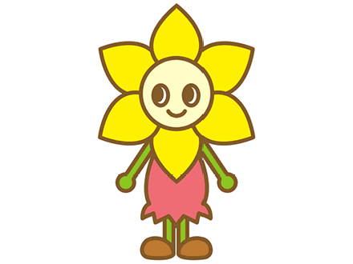

<ons-page id="diary_page">
    <div class="mainContent" style="height:100%; overflow-y:hidden">
        <div id="indexPage" style="height:100%; overflow-y:scroll" >
            <div style="position:absolute; left:5%; top:14%; height:86%; overflow:hidden;  -webkit-box-shadow: 0 4px 12px rgba(0, 0, 0, 0.5); box-shadow: 0 4px 12px rgba(0, 0, 0, 0.5);" >
                
            </div>
            <div style="position:absolute; top:16%; left:17%; font-size:15pt; height:82%; padding-right:15px; overflow-y:scroll">
                <h2 style="text-align:center;">日記目次</h2>
                <div>
                    <div id="diaryIndexArea">
                    </div>
                </div>
            </div>
        </div>    
        <div id="diaryPage" style="display:none">
            <div>
                
            </div>
            <div id="photoBtndiv">
                <ons-button id="photoBtn" style="display:none; -webkit-box-shadow: 0 4px 12px rgba(0, 0, 0, 0.5); box-shadow: 0 4px 12px rgba(0, 0, 0, 0.5);" modifier="cta">
                    この日記の写真を変える
                </ons-button>
            </div>
        
            <div style="position:absolute; left:5%; top:14%; height:86%; overflow:hidden;  -webkit-box-shadow: 0 4px 12px rgba(0, 0, 0, 0.5); box-shadow: 0 4px 12px rgba(0, 0, 0, 0.5);" >
                
            </div>
            
            <div style="position:absolute; top:16%; left:19%; font-size:20pt; height:82%; padding-right:15px; overflow-y:scroll">
<!-- 
                <a id="picture2a" href="img/nisimaro.png" data-lightbox="diary">
 -->
                
<!-- 
                </a>
 -->
                <div style="text-align:center">
                    
                    
                    <br />
                    <div style="text-align:right; font-size:15pt;" id="page"></div>
                </div>
            <div id="msg2" style="clear:both">まだ日記を見つけてません</div>
            <div style="margin-top:10px; text-align:center">
                <button id="openDiaryDetailBtn" class="diaryDetailclass">詳しい説明</button>
            </div>
        </div>
    </div>
</ons-page>

<ons-template id="photoChoose.html">
    <ons-dialog var="photoChooseDlg" style="width:90%" cancelable animation="none">
        <div style="padding:10px">
            <ons-button modifier="large" var="cameraBtn" onclick="photoType=1; photoChooseDlg.hide();">カメラで撮影する</ons-button>
            <br />
            <ons-button modifier="large" var="albumBtn" onclick="photoType=2; photoChooseDlg.hide();">アルバムから選ぶ</ons-button>
            <br />
            <ons-button modifier="large" var="albumBtn" onclick="photoType=3; photoChooseDlg.hide();">デフォルトに戻す</ons-button>
        </div>
    </ons-dialog>
</ons-template>